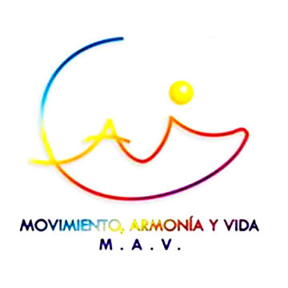
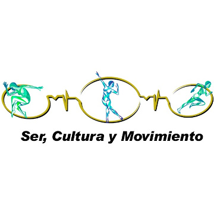

Información
¿Qué es?
Es un proyecto de investigación que tiene como objetivo caracterizar la infraestructura de los parques en Bucaramanga en relación con su estado y entorno, como posibles factores asociados a su utilización y práctica de la actividad física.
¿Quiénes somos?
Los ejecutores del proyecto somos profesores, estudiantes y profesionales de los grupos de investigación:

Movimiento, Armonía y Vida, de la Escuela de Fisioterapia de la Universidad Industrial de Santander.
Geomática, Gestión y optimización de sistemas, de la Escuela de Ingeniería Civil de la Universidad Industrial de Santander.

Ser, Cultura y Movimiento, de la Facultad de Cultura Física, Deporte y Recreación de la Universidad Santo Tomás.
¿Por qué se desarrolla este proyecto?
Alguna evidencia científica importante
La práctica regular de actividad física tiene múltiples efectos positivos sobre la salud, bienestar y calidad de vida de las personas. Por ejemplo: previene la enfermedad cardiovascular en población adulta y adulta mayor, tiene efectos favorables sobre el metabolismo de la glucosa, contribuye a disminuir la presión sanguínea, la grasa corporal y favorece el control del peso, siempre que se acompañe de buenos hábitos alimenticios.
La estrategia "Construir Ciudades Amables" de la Visión Colombia 2019, plantea que para lograr una sociedad más justa y con mayores oportunidades, se requiere de un espacio público accesible, adecuado y suficiente para la totalidad de los ciudadanos.
El Plan Nacional de Desarrollo (PND) 2010 - 2014: Prosperidad para Todos, establece la construcción de la Política Nacional de Espacio Público, que incluye la planeación, gestión, financiación y sostenibilidad del espacio público.
Los parques públicos son un espacio importante para la práctica de la actividad física. Pero su utilización depende de la accesibilidad, disponibilidad, áreas verdes, conservación y calidad, la programación de eventos organizados, la seguridad percibida y los servicios ofrecidos.
La actividad de caminata es una opción viable para todos los grupos etarios, sin distinción de género o condición socioeconómica, que no requiere entrenamiento especial ni destrezas adicionales.
Disponer de espacios abiertos como calles y parques atractivos y seguros, contribuyen a un comportamiento más activo de la población, a una dinámica de responsabilidad social y cuidado de lo público, a mejorar la convivencia, la tolerancia, la salud y la calidad de vida de los habitantes.
Este trabajo proporcionará información que contribuya a la formulación de políticas de estímulo y conservación de las áreas verdes, a un incremento en los estilos de vida activo de los ciudadanos y a la disminución de los factores asociados a las enfermedades crónicas.
¿Cómo se desarrollará el proyecto?
Un grupo de profesionales y estudiantes de la UIS y de la USTA, debidamente acreditados, visitarán algunos parques del municipio de Bucaramanga, escogidos por su ubicación e infraestructura y además entrevistarán a los usuarios.
Este operativo se llevará a cabo entre el 3 de agosto y el 30 de noviembre de 2015, de 6 a.m. a 8 p.m., varios días entre semana y además, sábados y domingos.
¿Qué vamos a medir?
Se medirán las diferentes áreas del parque, por ejemplo canchas, áreas verdes y senderos, entre otras.
Se contará el número de personas por sexo y grupo etario y además, se preguntará por el tipo de actividad que acostumbran realizar los usuarios dentro del parque.
Se entrevistará a los usuarios del parque por medio de un cuestionario.
¿Cómo se desarrollará la encuesta al usuario del parque?
La entrevista toma alrededor de 10 a 15 minutos.
Siguiendo los principios establecidos en la Resolución 008430 de 1993 del Ministerio de Salud de Colombia, por la cual se establecen las normas para la investigación en humanos, solo responderán la entrevista quienes estén de acuerdo y firmen la carta de consentimiento informado, establecida como condición para participar en el estudio. Los jóvenes mayores de 12 hasta los 17 años que quieran responder, deberán contar con la autorización de sus padres por escrito.
Se preguntará por información sociodemográfica, la actividad más frecuente dentro del parque, la condición de salud y de calidad de vida. Los dos últimos cuestionarios son muy sencillos de responder y han sido utilizados en muchos países.
Más información
Cada encuestador estará identificado con un carné y un chaleco de la institución. Para información adicional detallada y resolver inquietudes a la comunidad en general se cuenta con una página de internet:
- La línea fija:
- 6344000 Extensión 3147/3381
- Fijo:
- 6358582
- Móvil:
- 300 215 8176
- Correo electrónico:
-
dcamargouis.edu.co
paulacamilaramirezmunozmail.ustabuca.edu.co